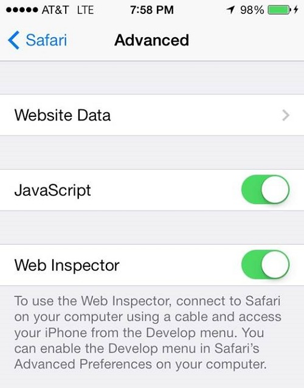
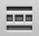

也紀念我們永遠的朋友 李士傑先生（Shih-Chieh Ilya Li）。
行動裝置的除蟲技術概論─第一部
◎本文翻譯自 DZone，原作者為 Raymond Camden：https://css.dzone.com/users/cfjedimaster
當你需要對行動裝置的網頁（或透過 PhoneGap 製作混合的應用程式）進行除蟲有時候是相當痛苦的。除非你是完美的（如果是，你不需要存在，你為什麼需要閱讀這篇文章？），否則在你得到對的方法之前，你將需要反覆透過許多不一樣的建立方式。在這邊文章中，我將著重於一些可行的選項去幫助開發者針對他們的行動裝置上之網頁應用程式除蟲。
Safari遠端除蟲
第一個選項，我們來看看是專門針對 iOS 設備但仍然可以用於一般除蟲的方式。在 iOS6 中，Apple 介紹了一個新的功能叫做 Safari 遠端除蟲機制 (Safari Remote Debugging)。這允許你在 iOS 裝置上（包含 iPhones 和 iPads）利用 Safari 瀏覽器針對網頁應用程式除蟲。這也包含了使用 PhoneGap 所建立的應用程式。不幸的是，這選項僅適用於使用 Mac OS X 的夥伴們。
為了使用這特性，你的 iOS 裝置必須實體的連結到你的筆記型電腦。接著你第一次使用時必須在裝置上開啟它。開啟「設定 (Settings)」，開啟 Safari，接著點選進階 (Advance) 功能。下方為 iOS7 裝置的截圖。

簡單地開啟網頁檢查員 (Web Inspector)，而這裝置就準備好進行遠端除蟲了。在進行下一步之前，開啟你的 Safari 並瀏覽網頁。
接著，開啟你的 Safari。如果你沒有看到開發 (Develop) 選單，請確認你的 Safari 選項。選擇進階 (Advanced) 頁籤，並開啟它。
在開發選單中你將會看到一個新的菜單選項，它會根據你 iOS 裝置來命名。注意如果你連結了多個裝置，你將會全部看到。同樣地如果你連結了 iOS 模擬器，選單中也會包含它。
當你的滑鼠移動到這裝置名稱時，你將會看到 Safari 上顯示的網頁之名字，或者如果你開啟了多個頁籤，將會顯示一串 URLs 列表。
選擇該 URL 及 Safari，你將會開啟一組開發者工具。
現在你將有能力透過電腦直接互動你行動裝置中的 Safari。如果你主要是使用 Chrome 的使用者，這選單項目可能不會這麼的明顯。在下一個版本的 Safari 將會改善開發者工具的使用者介面，你將會發現有一些不一樣。
從左到右看起，這些操作的圖示如下：
資源 (Resources)：這提供了大致相同於 Chrome的 開發者工具中的元件頁面 (Elements panel)
儲存裝置 (Storage)：這類似於 Chrome 的開發者工具中的資源頁面 (Resource panel)。請注意不同於 Chrome 的開發者工具，網頁檢查員只支援了 cookies 和網頁 SQL 資料庫。本機端的存儲裝置將不會出現在這使用者介面中。然而，你可以利用控制台 (console) 來檢查這些數值。
 儀表 (Instrument)：這包含了排版或 Javacript 的資料之網路回應時間。這相對應 Chrome 的則是網路 (Network)，時間軸 (Timeline) 和簡介 (Profile) 頁面。
儀表 (Instrument)：這包含了排版或 Javacript 的資料之網路回應時間。這相對應 Chrome 的則是網路 (Network)，時間軸 (Timeline) 和簡介 (Profile) 頁面。
搜尋 (Search)：允許你在現在的回應資料中橫向搜尋所有資料─包含了 HTML，Javascript 和 CSS 的原始碼。
問題 (Issue)：為當下回應資料中所發現的問題之報表。你可以在 Chrome 的控制台找到類似的資訊，但這種集中管理的瀏覽方式相當地方便。
 除蟲 (Debug)：Safari 的 JavaScript 的除蟲工具。
中斷點 (Breakpoint)：你可以在任何地方設定且瀏覽斷點資料。
最後是控制台(Console)
讓我們來進一步檢閱一些我認為對你們除蟲時最有幫助的幾個頁籤。清楚地說，你應該要知道每個不同頁籤所具有的功能，但在此文章中我們將會針對部分較重要的來說明。
控制台
希望你對控制台已經相當熟悉。在桌上型電腦中這是個你可以找到錯誤並隨意執行程式碼的地方。對於行動裝置的網站，它更為實用。在下面的截圖中你可以看到在控制台報告裡顯示了一個簡單的 JavaScript 錯誤。
如果之前所說的，你也可以在此處運行程式碼。這對於手動觸發事件或是檢查變數相當方便。
這裡有一個簡單的例子。我使用了控制台去確認 navigtor.userAgent 的變數值並使他跳出訊息。注意到它是觸發於裝置上（這此狀況中模擬器也是一樣）。
資源
資源的頁籤提供你對 DOM 的存取。當你在頁籤中選擇了某段程式碼，你將會即時的在裝置上看到明亮的區塊。
更進一步你可以即時的在裝置上編輯 HTML 程式碼。雙擊型態標示為 h1 的文字讓我們可以編輯並修改它。
選擇右上角的圖示你可以存取該標籤的節點和樣式屬性。在樣式屬性的菜單中你可以修改它的設計方式。這對於行動裝置相當的有用。在下面的例子中我增加了一個顏色，但你可以利用修改頁邊 (margin)、填充 (padding) 和尺寸的數值來替你的網站增加視覺效果。
儀表
在儀表的頁籤中，網路請求的狀況將可能會是你第一個有用的工具。在複雜的 Ajax-based 應用程式，追蹤跟監視網路地請求的狀況是難以置信地有用。
第一個你應該要知道的是網路請求失敗。舉例來說 404s 的訊息將不會顯示於此。取而代之地他們只會顯示在控制台頁籤。桌上型的 Chrome 將會在網路頁籤及控制台上都顯示出失敗的網路請求。
讓我們來看個簡單的例子。我執行了一個簡單的 Ajax 請求。請注意到它與其他請求（CSS、JavaScript......等等）是如何顯示於網路頁籤的。
注意到被選擇列的箭頭了嗎？點選它將會載入該請求的原生資料 (raw result)。
請務必檢查儀表板的其他部分，對於呈現區域和 JavaScript 事件將相當的有幫助。
除蟲者
最後一個我們來看的是除蟲者 (debugger)。這涉及到網路監視員的幾個不一樣的部分。第一，在資源頁籤中我可以從我的應用程式中選擇一個 JavaScript 檔案。
接著我可以簡單地透過點選某行的方式去增加斷點。如下圖我在第 7 行執行了斷點。
現在當我在裝置上執行它，它將會暫停執行並讓你一步一步的執行。
Chrome 的遠端除蟲
在本文的下一個部分，我們將專注於 Chrome 的遠端除蟲工具 (Chrome Remote Debugging)。你可能會猜，這將會是專注於 Android 裝置和 Chrome 瀏覽器。有一點很重要的是你記得在制式的 Android 瀏覽器和 Android 的 Chrome 瀏覽器間有一個差別。桌上型電腦的 Chrome 所提供的除蟲工具支援了行動裝置上的 Chrome。這可能很明顯的但不要忘記了。大約六個月前有一份報告，制式的 Android 瀏覽器比 Android 的 Chrome 花費大於十倍以上的時間！儘管如此，你還是可以使用 Chrome 遠端除蟲工具。
在一開始，你需要替 Chrome 安裝 ADB 擴充元件。這擴充元件在你的 Chrome 瀏覽器的右上角新增了一個圖標。
在這例子中，我已經連結了 Android 裝置。（補充說明，不同於 iOS 遠端除蟲工具，你不能在此功能中使用 Android 模擬器）。點選它，並展開其選項：
「開始 ADB」及「結束 ADB」選項參照於除蟲服務的狀況，並且只要它已經開始運作，你只能停止它。「檢查監視目標 (View Inspection Target)」選項將會幫你列出所有已連線的裝置。
接著，在你的 Android 裝置上開啟 Chrom，點選設定 (Settings)，再點選進階功能 (Advanced)、開發者工具 (Developer tools)，接著開啟 USB 網頁除蟲機制 (USB Web debugging)。
一旦你做完上述步驟，回到你的桌上型電腦，點選「檢查監視目標」。桌上版的 Chrome 將會告訴你一些在裝置上你所開啟的網頁資料。事實上，你如果開啟多個不同的頁籤，你可以在你的電腦鐘看到一串它們的列表。
你可以看到每一個頁籤的一些選項。重新載入或是關閉恰巧會是你所想要的。在這裡有一個有趣的選項是「檢查 (Inspect)」。點選「檢查」的選項開啟一個類似於 Chrome 開發工具 (Chrome Dev Tools UI) 的新視窗。
（你會問什麼是 ChemaDump 頁籤？實際上他是一個我替自己撰寫的擴充元件。Chrome 讓你自己替任何事情撰寫擴充元件，包含建構在開發者工具上的擴充元件。同樣的元件可以在我的桌上型電腦及 Android 上運作）
假設大部分的夥伴都已經相當熟悉 Chrome 了，我們並不會逐一去看這些頁籤。如果不是，你可以先免費地閱讀這個開發工具 DevTools course on CodeSchool。如你所想像，控制台是已連結的裝置。在桌上型電腦執行一個命令將會執行在行動裝置上。
同樣地，類似於 Safari 除蟲者，你可以在元件頁籤 (Elements panel) 中選擇 DOM 元件，並可以及時地在裝置上更新。你也可以修改這些元件以便測試 CSS 修改狀況或是其他的改變。（請原諒我使用這樣的相機相片，但沒有辦法選擇 DOM 並同時呈現其在裝置上被標示及桌面的樣子）
如你所想像，Chrome 的開發者工具對大多數的開發者而言非常地強大且熟悉。有了這些可行方案，讓您測試行動裝置將是非常有用的！
接下來呢？
在本文中我們著重於那個大男孩 (big boys) ─ iOS 和 Chrome 的遠端除蟲工具。當然也有其他行動裝置平台和其他你可以使用的工具。在下一個章節，我們將討論另外兩個工具─ Adobe's Edge Inspect 和 Weinre。
譯者簡介張准榕，Lilina Chang。畢業於中華大學資訊管理碩士。
目前任職於華晶科技研發部門，以 C++ 撰寫 PC 應用程式為主。過去曾經任職於漢民科技資訊部門，便以 PHP、MySQL 及 Javascript 開發網頁應 用程式。喜歡資訊科技及旅行，本持著資源共享及共同學習成長的原則與人交流。
Special


Address：No.128, Sec.2, Academia Rd., Institute of Information Science, Academia Sinica, Nangang District, Taipei City 11529, Taiwan (R.O.C).
Privacy Policy. Terms-of-use

Comments
ps: 建議，若此篇為貴電子報的主篇的 話，也請好好的順一下文章內容